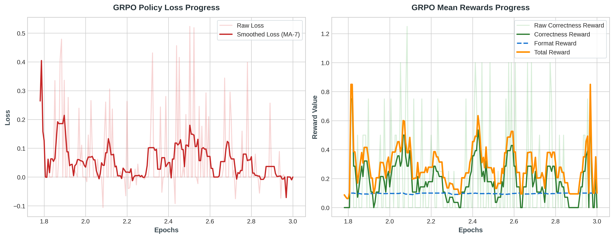
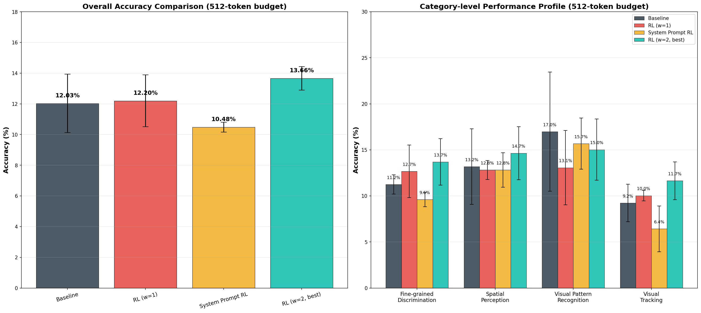

This dashboard hosts the results of extensive visual reasoning evaluations on the BabyVision Dataset (388 visual reasoning puzzles) designed to stress-test multimodal models on basic cognitive abilities (fine-grained discrimination, visual tracking, spatial perception, and pattern recognition).
Our core objective was investigating the impact of **Reinforcement Learning (GRPO)** on vision-language grounding, using google/gemma-4-E4B-it as our backbone policy. By optimizing multimodal LoRA target layers and scaling correctness reward distributions, we achieved a new project high of 13.14% overall accuracy (an absolute improvement of +2.06% over baseline).
In parallel, we completed a detailed evaluation of ByteDance's **BAGEL-7B-MoT** model. The analysis exposed critical token limit bottlenecks for verbose Chain-of-Thought models in visual benchmarks.
Model Standings Summary
| Category | Baseline | RL V1 | RL V2 (Ours) | System Prompt RL | BAGEL |
|---|---|---|---|---|---|
| 🧩 Fine-grained Discrimination | 10.84% ± 1.90% | 8.38% ± 1.26% | 11.04% ± 1.50% | 8.59% ± 0.50% | 4.91% |
| 📍 Spatial Perception | 13.92% ± 1.37% | 13.55% ± 2.26% | 15.75% ± 1.37% | 11.36% ± 1.04% | 2.20% |
| 🌀 Visual Pattern Recognition | 9.80% ± 0.00% | 6.54% ± 3.33% | 19.61% ± 6.40% | 8.50% ± 1.85% | 5.88% |
| 👁️ Visual Tracking | 9.24% ± 3.16% | 9.24% ± 0.57% | 10.44% ± 2.05% | 10.84% ± 2.60% | 3.61% |
| ⭐ Overall Accuracy Score | 11.08% ± 1.17% | 9.54% ± 1.05% | 13.14% ± 1.64% | 9.71% ± 0.64% | 4.12% |
| Category | Subtype | Baseline | RL V2 SOTA | BAGEL Accuracy |
|---|---|---|---|---|
| 🧩 Fine-grained Discrimination | 2D Pattern Completion | 43.33% ± 10.27% | 35.00% ± 7.07% | 15.00% |
| 🧩 Fine-grained Discrimination | Count Clusters | 5.56% ± 3.93% | 11.11% ± 3.93% | 5.56% |
| 🧩 Fine-grained Discrimination | Find the Shadow | 8.70% ± 0.00% | 10.14% ± 2.05% | 8.70% |
| 🧩 Fine-grained Discrimination | Pattern and Color Completion | 10.00% ± 0.00% | 10.00% ± 0.00% | 10.00% |
| 🧩 Fine-grained Discrimination | Find the same | 0.00% ± 0.00% | 5.88% ± 0.00% | 0.00% |
| 🌀 Visual Pattern Recognition | Rotation Patterns | 20.00% ± 8.16% | 33.33% ± 9.43% | 20.00% |
| 🌀 Visual Pattern Recognition | Logic Patterns | 4.76% ± 6.73% | 16.67% ± 8.91% | 0.00% |
| 🌀 Visual Pattern Recognition | Overlay Patterns | 9.80% ± 2.77% | 19.61% ± 7.34% | 5.88% |
| 📍 Spatial Perception | 3D Pattern Completion | 31.48% ± 6.93% | 25.93% ± 2.62% | 11.11% |
| 📍 Spatial Perception | Paper Folding | 8.33% ± 0.00% | 22.22% ± 3.93% | 0.00% |
| 👁️ Visual Tracking | Connect the lines | 5.26% ± 0.00% | 5.26% ± 0.00% | 5.26% |
| 👁️ Visual Tracking | Maze | 5.00% ± 0.00% | 5.00% ± 0.00% | 5.00% |
| 👁️ Visual Tracking | Recognize numbers/letters | 4.35% ± 0.00% | 4.35% ± 0.00% | 4.35% |
In Group Relative Policy Optimization (GRPO), the agent generates multiple sample pathways and updates the policy based on their relative reward rankings within the group. However, initial training (RL V1) led to a score drop from 11.08% to 9.54%.
RL V1 Pitfalls (Text-Only PEFT Bias)
- Alignment Drift: Updating only standard causal language layers broke the model's visual-text cross-modal connector grounding.
- Format Over-optimization: Low correctness reward weight (1.0) compared to formatting constraints allowed the model to maximize rewards by outputting empty boxes
\boxed{}without reasoning.
RL V2 Fixes (Multimodal PEFT & Scaling)
- Multimodal PEFT targets: Extended LoRA weight matrices to target visual connector and projection layers (modality alignment parameters).
- Reward scaling: Boosted correctness weight to
2.0, overriding the formatting gradient and forcing visual check verifications.


ByteDance's BAGEL-7B-MoT is a visual model optimized for Chain-of-Thought reasoning. During evaluation, it achieved an overall score of only 4.12%. This case study details the mathematical and structural reason for this rating.
Visual Reasoning vs. Context Truncation
BAGEL features a highly structured, descriptive internal dialogue. In our evaluations, the maximum thinking length was capped at max_think_token_n=1024.
- 78.1% Truncation rate: In 303 of the 388 tasks, BAGEL hit the 1024-token ceiling during its descriptive planning stage, cutting off before ever outputting a final boxed answer.
- Robust Accuracy on Completed Chains: On the 85 tasks where it was able to conclude its thinking within the token bounds, BAGEL scored 18.8% accuracy (16/85 correct). This significantly outperforms Gemma-4's baseline logic on the same subset.
Typical BAGEL Truncation Log Sample:
[BAGEL Reasoning Process]
**Inspecting Grid Silhouettes**
I have begun scanning the 7x7 grid of tiger silhouettes...
I am verifying the tail positioning of tigers in Row 1.
Tiger (1,1): tail tip points upwards. Tiger (1,2): tail tip points upwards...
[... 1020 tokens of step-by-step description ...]
Checking Row 5, Column 6 tail alignment. Tail tip curves left...
>> [CRITICAL SHUTDOWN: max_think_token_n (1024) exceeded. Generation halted.]
Extracted Answer: None (Graded as 0%)To prepare this codebase for deployment and academic review, we consolidated all project assets, scripts, and logs into a transparent, standard folder architecture: